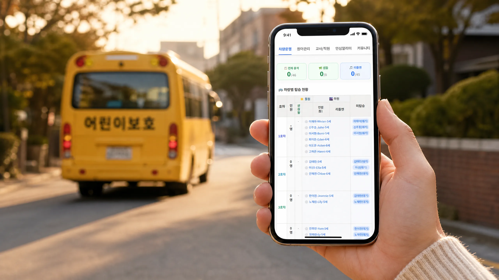
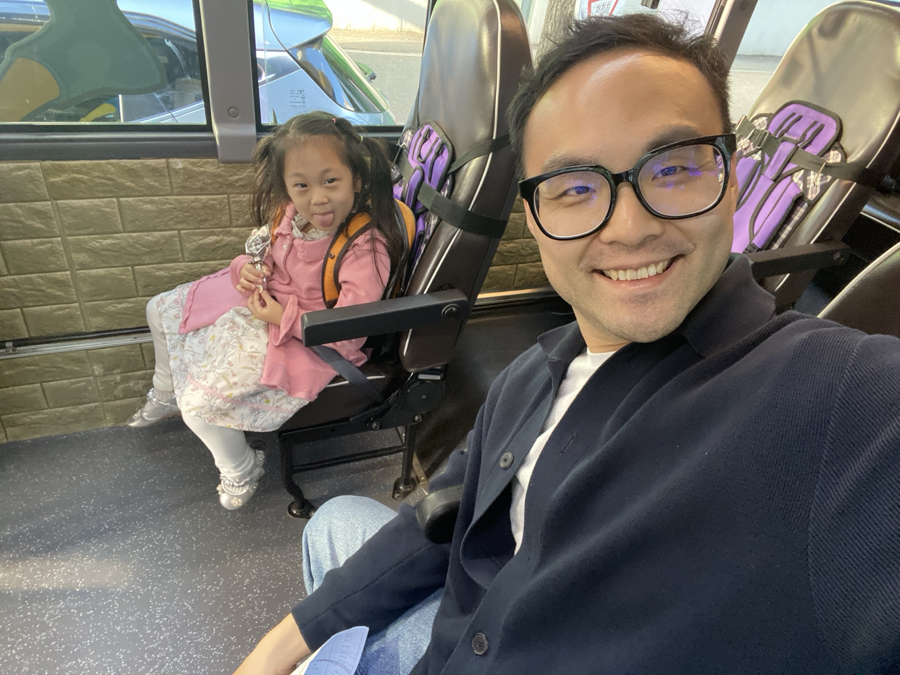
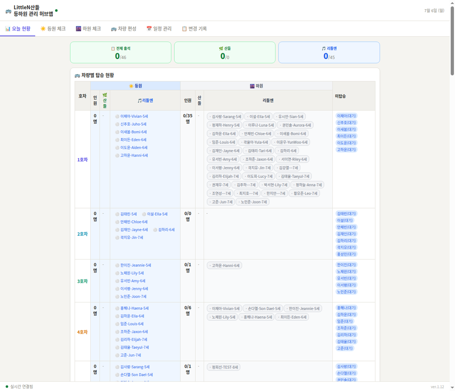
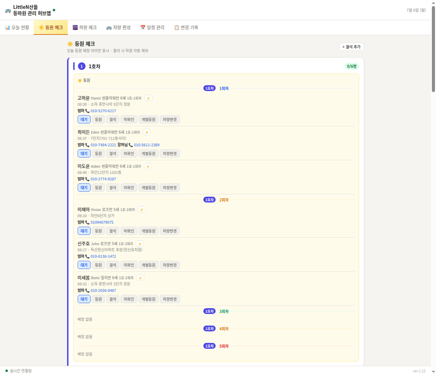
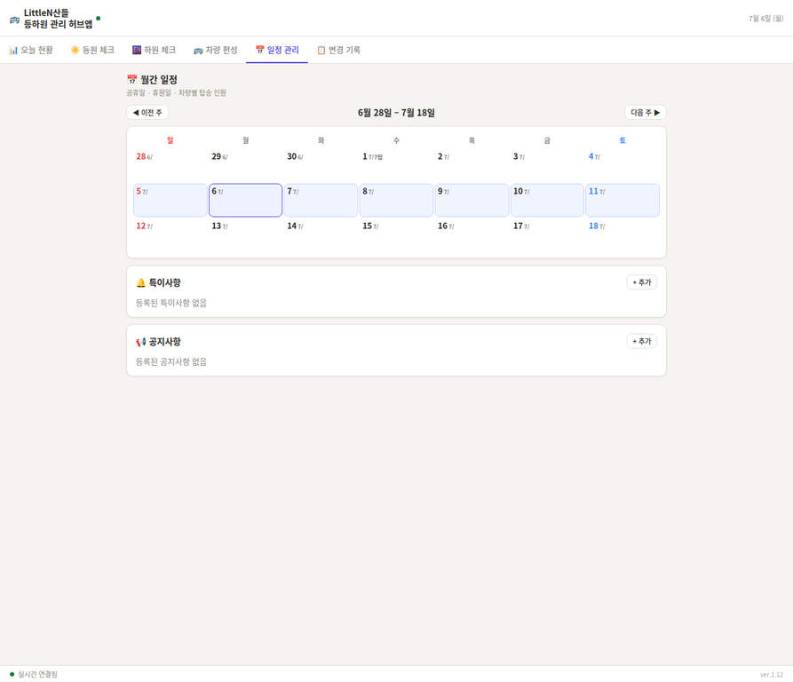
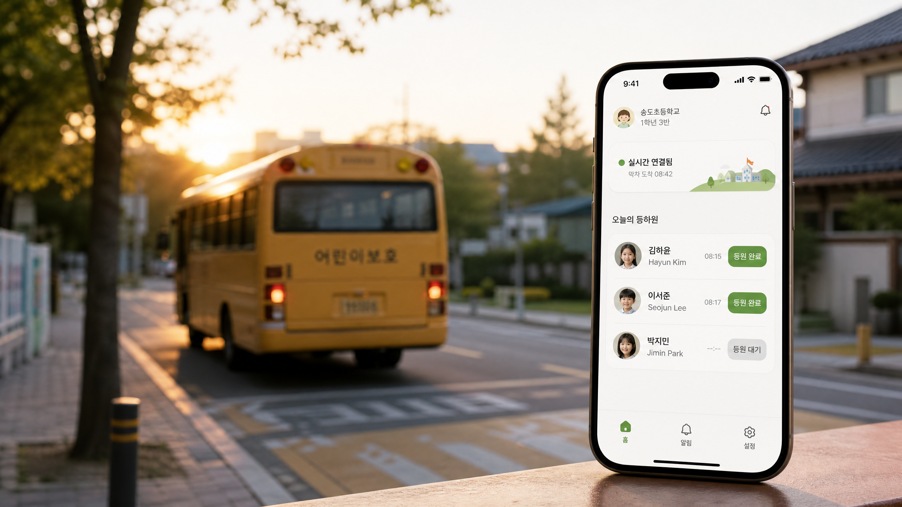
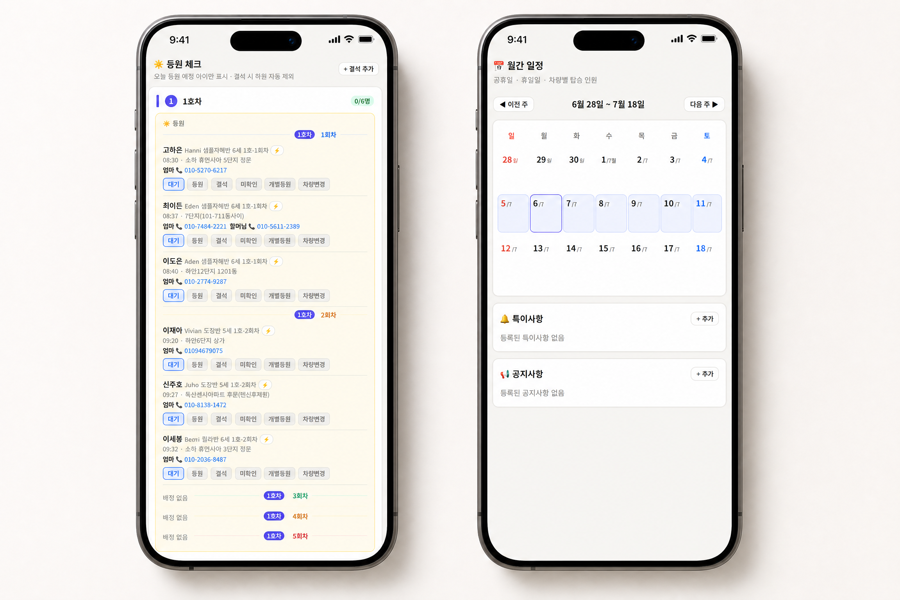
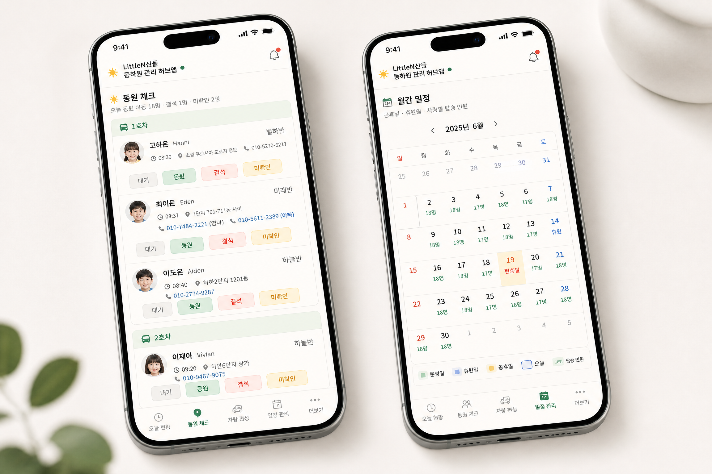
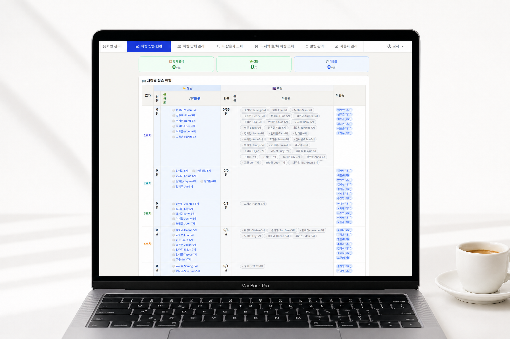

Client
LittleN English Kindergarten
Sandeul Kindergarten
Seoul, Korea
Role
Research · Strategy
UX Design · Development
Solo Project
Scope
Field Research · Interviews
System Design · Build
v1.12 Live
Year
2026
Ongoing

An end-to-end attendance and bus management system for two private kindergartens — designed from the inside out, starting with two months on the bus.
About This Project
Trained first in ceramic art in South Korea, then graphic design in Toronto, Canada — a practice built on material thinking, where every decision carries weight beyond the screen. From branding infrastructure to kindergarten safety systems, the work begins before the brief.
Context
The most important design decision on this project happened before any design began. Two months working as a school bus aide for LittleN and Sandeul made the operational problems concrete: routes ran on paper, status updates happened by phone, and the gap between what was recorded and what was actually happening grew wider every morning.
"The challenge was to replace that friction with a real-time system, built for teachers and drivers who had no time to learn a new tool."
LittleN and Sandeul are two private kindergartens operated by the same family in Seoul — together managing approximately 120 students across 6 bus routes, two institutions, and a daily schedule that leaves no room for error.


Research
Daily interviews with the principal, director, department heads, teachers, and drivers shaped the system's priorities. Safety and timing accuracy came first — not as abstract design principles, but as operational realities that the children on those buses depended on every day.
The system had to serve three distinct user groups — teachers checking students in, administrators managing routes, and the institution maintaining a live record — without requiring any of them to navigate the interface differently. Every stakeholder group participated in iterative feedback cycles throughout the build.
120+
Students managed
across two kindergartens
6
Bus routes tracked
in real time
3
User groups served
with one interface
System Design
The resulting app is a six-tab hub structured temporally — morning arrival and afternoon dismissal as the two primary states, with each bus route functioning as a self-contained unit. Status updates are single-tap, emergency contacts are one touch away, and temporary route changes are logged automatically.

Today's Overview — Live headcount, all routes

Morning Check-in — Bus-by-bus attendance

Outcome
The app is currently live at version 1.12, deployed across both kindergartens. Paper routes and phone calls have been replaced by a system where every status change is visible, logged, and one tap away — across 120+ students, 6 routes, and two institutions running simultaneously.
"Two months on the bus — before any wireframe was drawn — produced a clarity of priorities that no amount of secondary research could have provided."
The project demonstrated that the most effective design research is not always conducted in a studio. Proximity to the problem — and to the people living it daily — shaped every decision from structure to interaction detail.
2 mo.
Field Research
Worked as a school bus aide before any wireframe was drawn — direct immersion in the operational problem
86%
Re-visit Rate
Daily active return rate across teachers, drivers, and administrators after v1 deployment
v1.12
Live in Production
Currently deployed across two kindergartens — real users, real routes, real daily operations
A Note on Process
This project was designed, planned, and built independently — with AI as a core part of the development workflow. That was a deliberate choice, not a shortcut.
As clients and collaborators across industries have grown more fluent in what AI tools can and cannot do, the conversation around AI in design practice has shifted. It is no longer a question of whether to use these tools, but how to use them with intention. On this project, AI handled the implementation layer — translating system logic into functional code — while every structural decision, user flow, and interaction priority was defined through direct field research and stakeholder feedback.
The result is a working product, not a prototype. Two months of research and two months of build, compressed into a timeline that would not have been possible through conventional development alone. The speed enabled more iteration. More iteration produced a better system.
What’s Next
Version 2.0 · In PlanningThe current deployment represents Version 1.12 — a fully functional system now in active use across both kindergartens. This phase is intentionally a user testing period: real teachers, real drivers, and real administrators using the product daily, generating the kind of feedback that no prototype or pilot study can replicate.
Every friction point, every workaround, every moment where a user pauses before tapping — these are the inputs that will define Version 2.0. The goal is not to add features, but to refine the system around how people actually use it, not how they were expected to.
Version 2.0 is projected to represent a 3× or greater increase in scope and budget relative to the current build. Planning conversations have already begun with the kindergarten directors, exploring what a professionally engineered, investor-backed version of this system could look like at scale.
Those conversations have included meetings with potential investors, professional developers, and operations specialists — all with the shared goal of taking what has been validated through Version 1 and building it into a platform capable of serving not just two kindergartens, but a broader network of early education institutions. The foundation is in place. The next step is finding the right partners to build on it.



